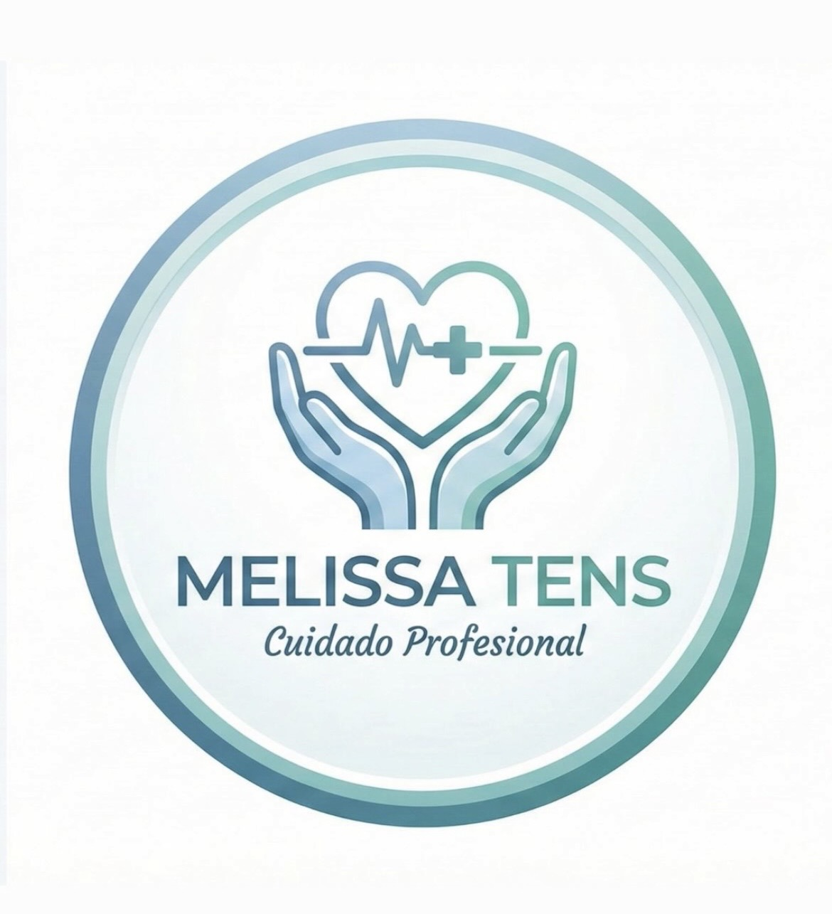
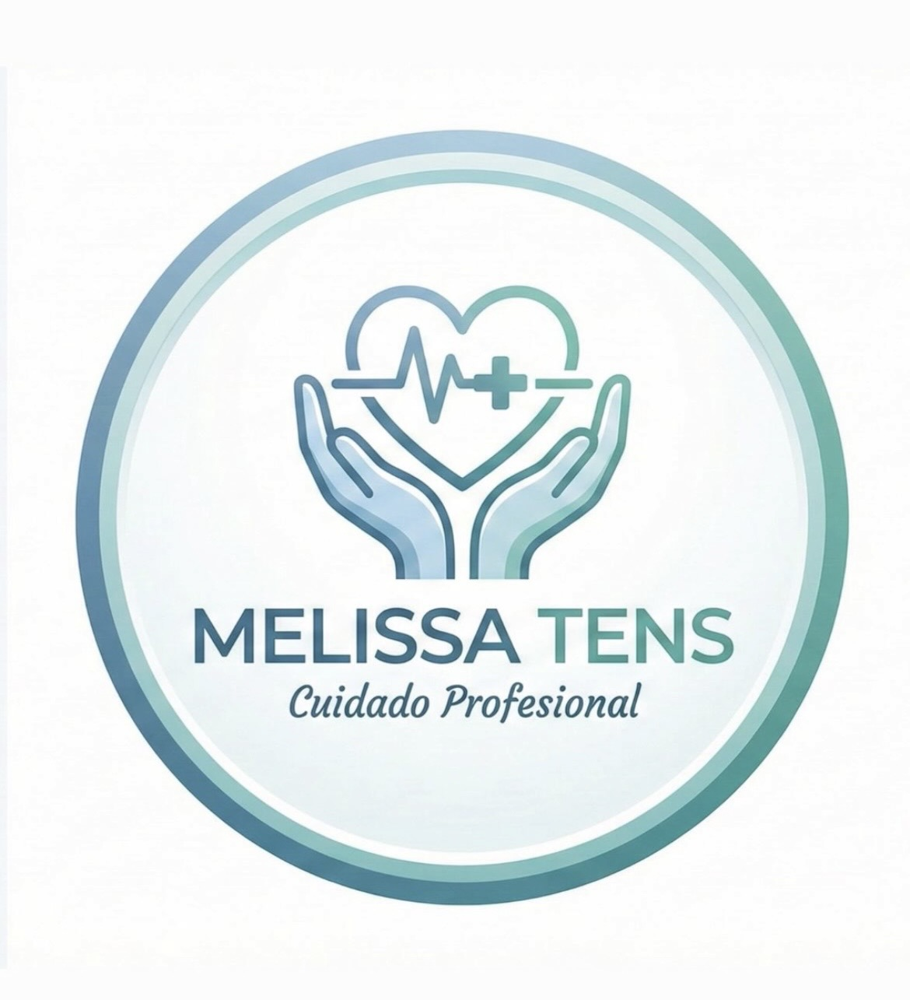
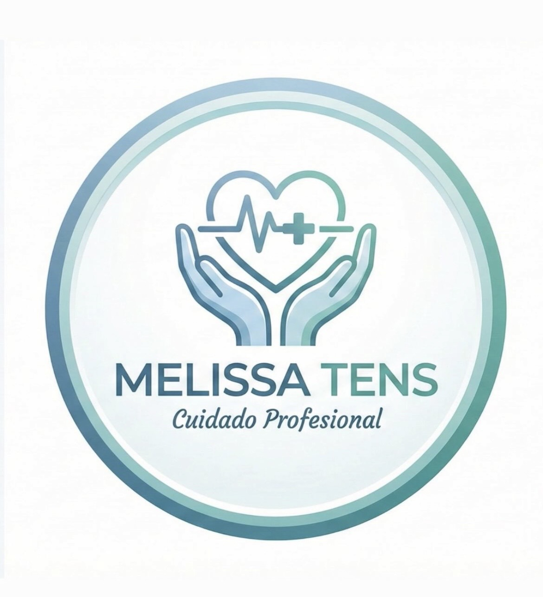

Melissa Zamorano Levy
TENS a Domicilio & Tecnóloga en Informática Biomédica
Cuidados humanizados + soluciones digitales para optimizar procesos clínicos y mejorar la experiencia del paciente.
Coordinar Atención

TENS a Domicilio & Tecnóloga en Informática Biomédica
Cuidados humanizados + soluciones digitales para optimizar procesos clínicos y mejorar la experiencia del paciente.
Coordinar AtenciónAtención profesional, segura y humanizada en tu hogar.
Consultora HIS y capacitadora en flujos clínicos y administrativos para mejorar el uso eficiente de sistemas de información en salud.